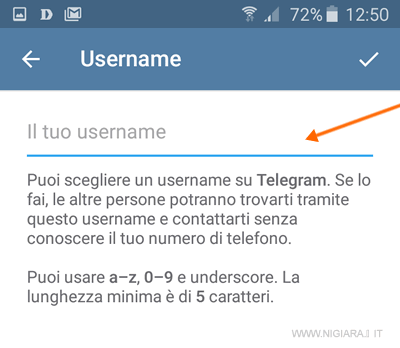
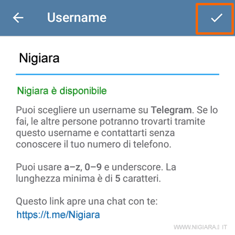

Come cambiare lo UserName e/o la Foto Profilo su Telegram
Come impostare uno username su Telegram
- Entra sull'applicazione Telegram con il tuo smartphone
- Premi sull'icona del menu principale in alto a sinistra
- Seleziona la voce Impostazioni nel menu
- Premi su Username nella sezione account

- Digita il tuo username. Deve essere un nome ancora libero e non già usato da altri.
 - Per confermare premi sull'icona con la spunta in alto a destra

Quando imposti uno username, ti viene dato anche un link diretto che permette agli altri di aprire direttamente una chat con te ( es. t.me/nigiara ).
Ora le persone possono trovarti su Telegram digitando il tuo username nel campo di ricerca.
Come impostare una foto profilo su Telegram
- Apri Telegram e vai alla scheda Impostazioni .

- Seleziona il tuo profilo facendo clic nella parte superiore della pagina.

- Tocca la tua attuale immagine del profilo.

- Scegli una nuova immagine del profilo utilizzando le diverse opzioni offerte (ricerca sul Web, libreria di foto del telefono, fotocamera, ecc.).

- Dopo aver selezionato la foto, scorrere verso il basso sino a individuare la voce "Privacy e sicurezza"
- Fare tap su "Privacy e Sicurezza"
- Scorrere sino a individuare la voce "Foto profilo"
- Fare tap su "Foto profilo"
- A questo punto è possibile scegliere se rendere la foto profilo visibile a tutti, ai contatti o a nessuno
- Selezionando "Tutti", la foto verrà mostrata a tutte le persone con cui si scambiano messaggi e anche nei gruppi e a chi ci cerca su Telegram.